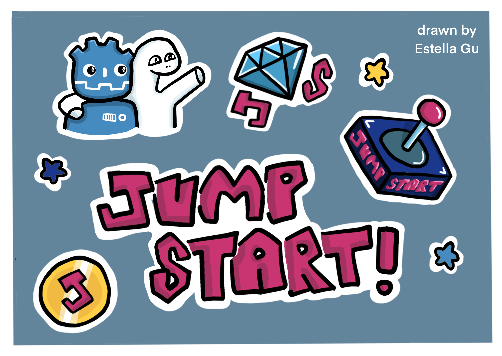

How Does This Work?
1. Create a Platformer Game using Godot
Godot is a free game engine you can use to create games! Use the guide on the right to create your 2D platformer. Also, learn to setup a Github repo for your project using this video.

2. Make Your Game Unique
Create a backstory or choose a theme or style for your platformer. Then, keep adding on to your game and adding new features to make it better! Look at the some of the other platformer games made by Hack Clubbers with Godot below! You can add your own story, background, and more.

Signal Lost
A space platformer with gravity changing and dangerous plants.
Made by Estella Gu, you can play it at here!

Cocytus
A cave platformer where you move with your mouse.
Made by Sarah Ngai, you can play it at here!

Echoes
An adventure platformer where you move with a lantern.
Made by Olive Wu, you can play it at here!

PlatformLand
A land platformer where you explore ancient ruins and avoid dangerous biomes.
Made by Julia Nadolska, you can play it at here!

4. Ship your Project and Share it
Share your amazing project in the #ship channel and the #jumpstart channel. You can share the Itch.io link for your game with family, friends, and anyone else.
5. (Submissions Closed for V1, submit to V2) Earn Prizes! CONGRATS!
You will get the stickers below if you submit before July 7th and if you are particpating in Athena Award, also Artifacts! Congratulations!
